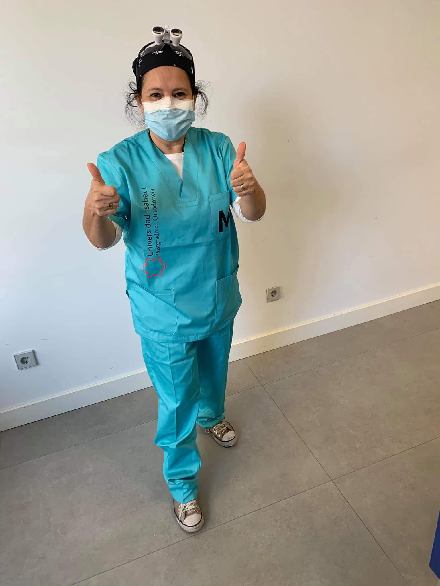
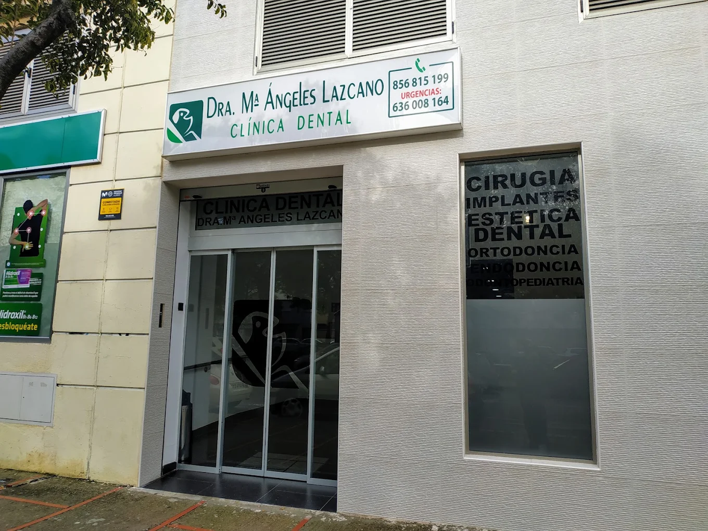
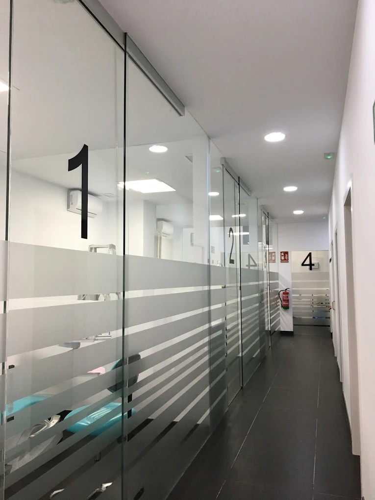
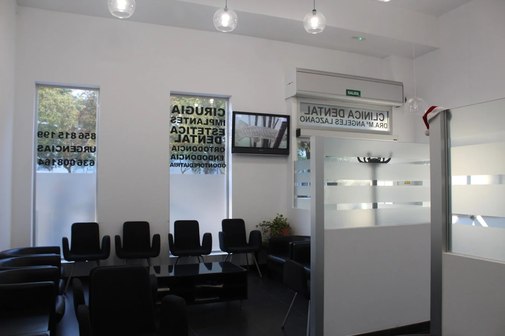
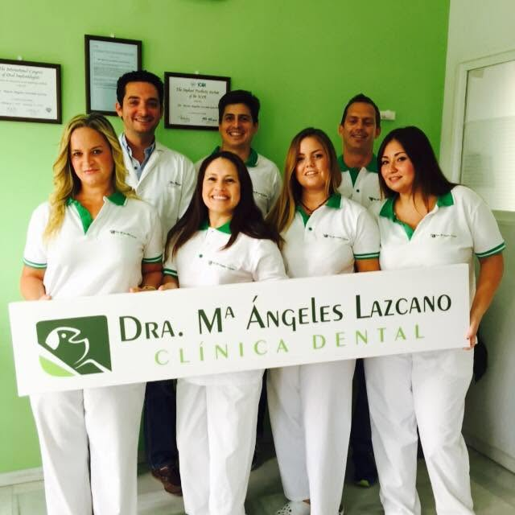
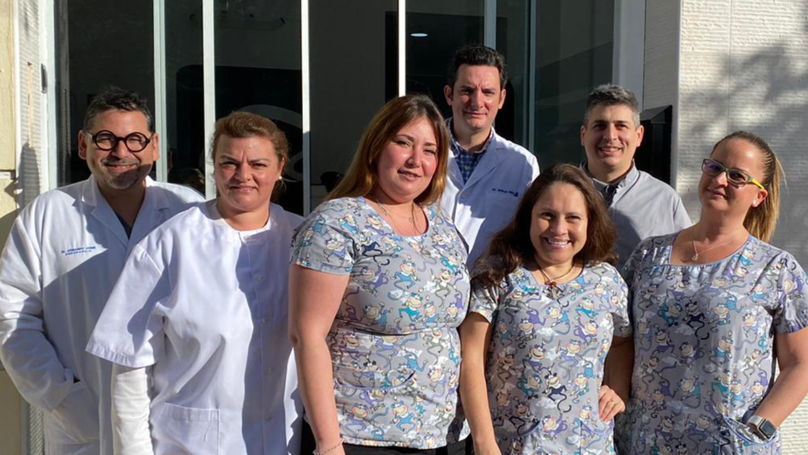
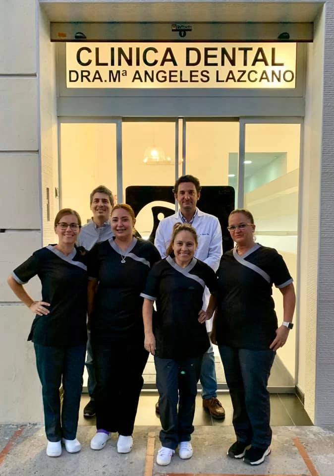
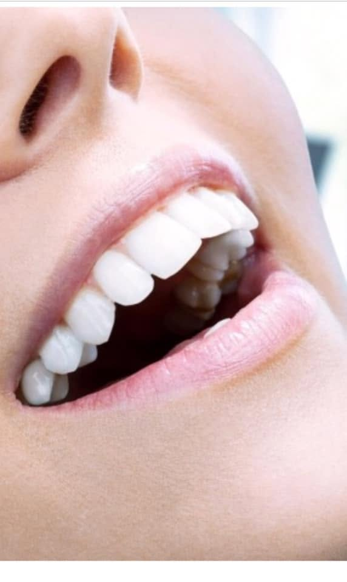
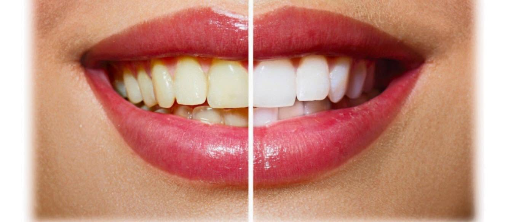

Odontología integral en Jerez de la Frontera. Un trato cercano, instalaciones modernas y tratamientos sin dolor adaptados a toda la familia.
Atención prioritaria y servicio de urgencias los sábados bajo disponibilidad.
Llamar a la clínica →Explicamos cada procedimiento detalladamente y a tu ritmo.
Técnicas modernas enfocadas en tu máxima comodidad.
Gestión rápida de turnos y atención los sábados.
Soluciones integrales para mantener tu salud bucodental en perfectas condiciones.
Revisiones periódicas, limpiezas dentales profilácticas y empastes para mantener tus dientes libres de caries y placa.
Blanqueamientos dentales de alta eficacia y carillas para mejorar la forma, color y simetría de tu sonrisa.
Sustitución de piezas perdidas mediante implantes de titanio de primera calidad y prótesis fijas o removibles.
Corrección de la posición de los dientes y la mordida mediante brackets tradicionales y sistemas estéticos.
Cuidado especializado para los más pequeños en un entorno amigable que previene el miedo al dentista.
Tratamiento de conductos para salvar piezas dañadas y cuidado especializado de las encías (gingivitis y periodontitis).
En nuestra consulta de la Avenida de Europa en Jerez, entendemos la odontología como un servicio basado en la honestidad, la precisión técnica y la empatía con el paciente.
Nos dedicamos a cuidar de la salud bucal de generaciones de familias en Jerez, ofreciendo diagnósticos claros y alternativas adaptadas a cada necesidad real.

Un espacio pensado para que te sientas tranquilo desde que entras. Instalaciones modernas, climatizadas y adaptadas, con protocolos de higiene rigurosos y tecnología que nos permite diagnósticos precisos y tratamientos cómodos.
Trabajamos sin prisas: cada caso se estudia y se explica con claridad, proponiendo solo lo necesario y haciendo seguimiento después de cada tratamiento. Así cuidamos de familias jerezanas desde hace más de 18 años.
Toca una foto para ampliarla.



Cercanía y profesionalidad en cada visita.



Resultados naturales que hablan por sí solos.


años cuidando sonrisas en Jerez
áreas de tratamiento integral
atención a urgencias
Estamos ubicados en una zona de fácil acceso y aparcamiento en la zona de Entreparques.
Av. de Europa (Urb. Entreparques I)
11405 Jerez de la Frontera, Cádiz
Lunes a Viernes: 10:00 - 14:00 | 16:30 - 20:30
Sábados: Atención a Urgencias